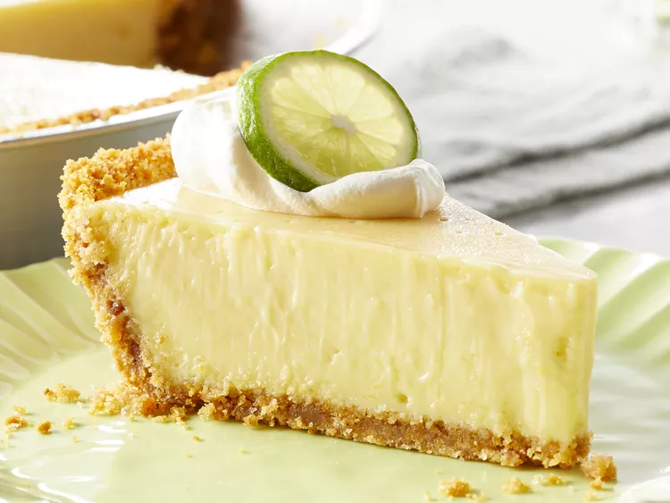

Key Lime Pie

Description
Embark on a flavor adventure with our Key Lime Pie – a tantalizing blend of tangy citrus and velvety sweetness that's bound to delight your palate.
This easy-to-follow recipe unlocks the secrets to creating this tropical masterpiece in the comfort of your own kitchen.
Get ready to savor the perfect balance of zesty key limes and buttery crust, elevating your dessert game to new heights!
Ingredients
- 5 egg yolks, beaten
- 1 can sweetened condensed milk
- 1/2 cup key lime juice
- 1 prepared graham cracker crust
Steps
- Gather all ingredients
- Preheat oven to 375 degrees F
- Combine sweetened condensed milk, key lime juice, and egg yolks in a large
bowl; mix well
- Pour mixture into unbaked graham cracker crust
- Bake in the preheated oven until filling is set, about 15 minutes
- Allow to cool completely before slicing